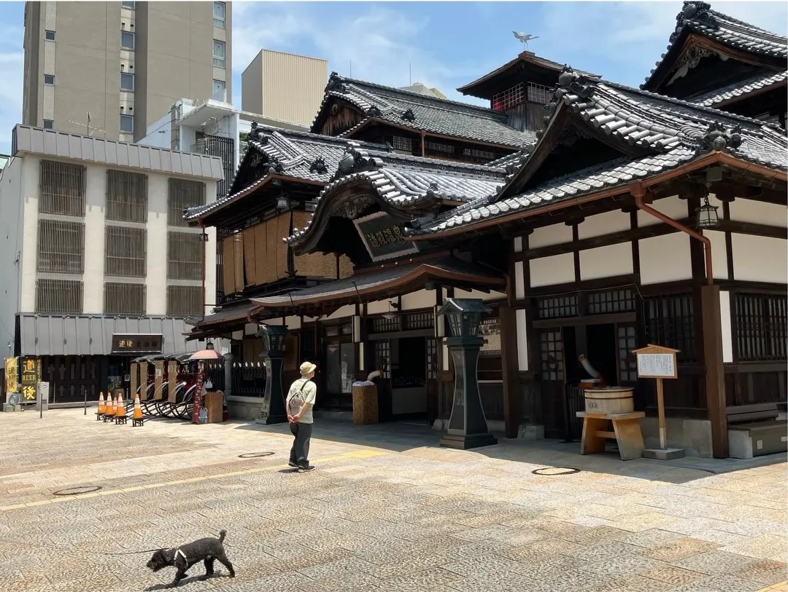
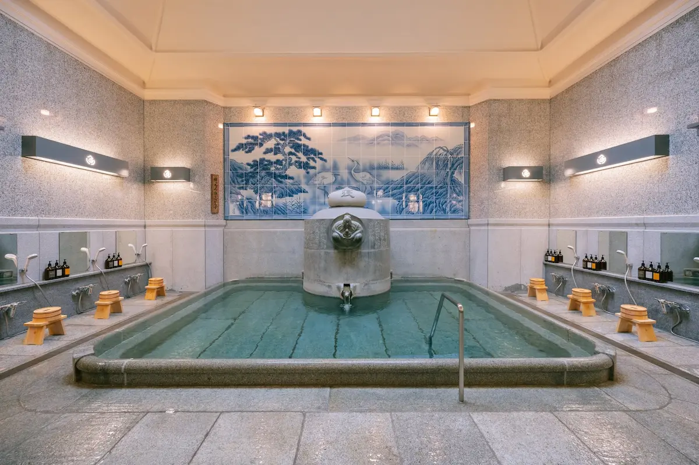
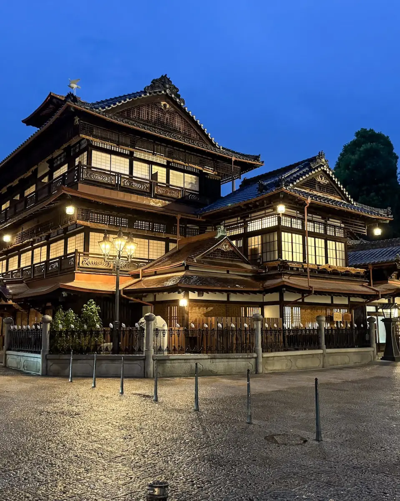
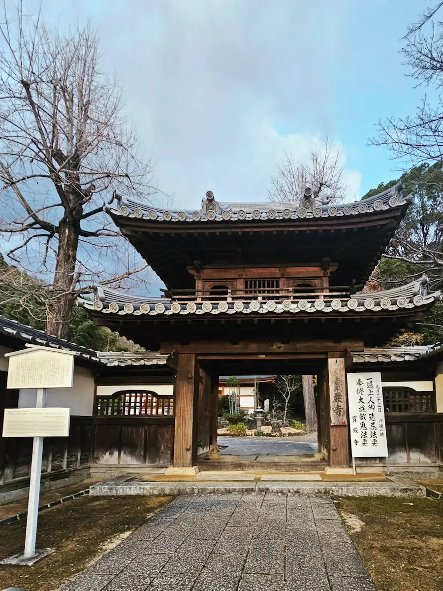
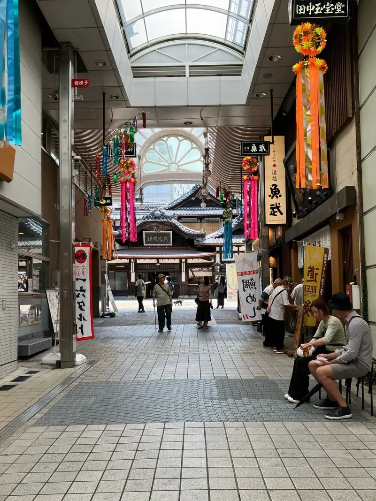
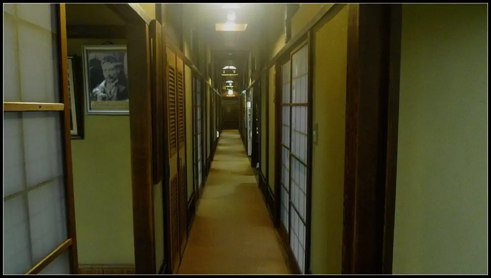
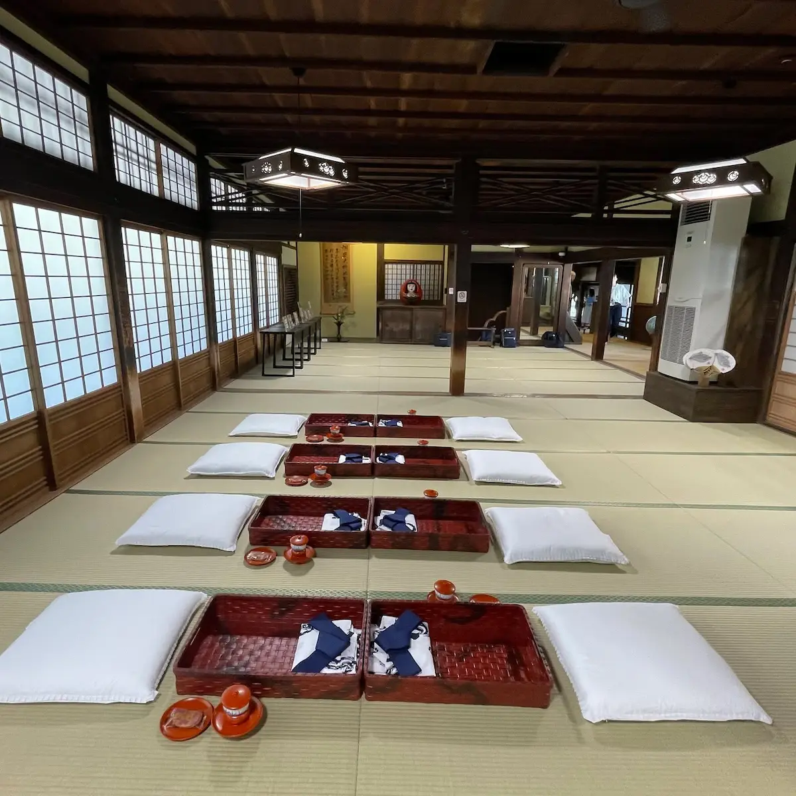
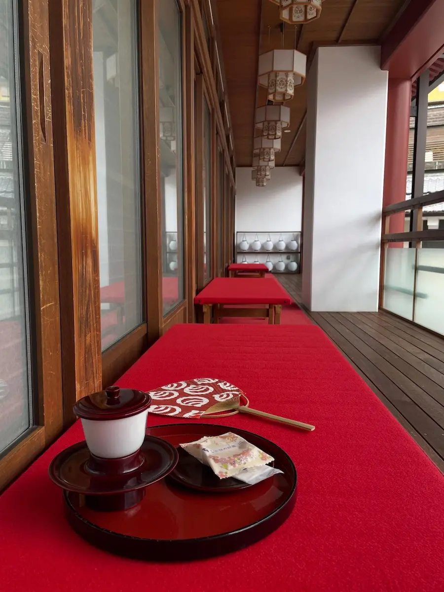

At dusk, the Shinrokaku cupola on the roof of Dogo Onsen Honkan begins to glow. The wooden building — three stories of Meiji-era architecture stacked like a ceremonial gift — takes on a warmth that the afternoon never shows. Visitors slow down on the approach. Cameras appear. And somewhere in every person's mind, a memory surfaces: a bathhouse, lit from within, at the edge of a world that is not quite human.
Hayao Miyazaki has never officially confirmed that Dogo Onsen Honkan is the model for Yubaba's bathhouse in Spirited Away. He has never needed to. The building speaks for itself — and 3,000 years of history speak with it.
Three Thousand Years, One Building
The hot springs at Dogo are among the oldest documented in Japan, mentioned in the Man'yoshu poetry anthology in 759 CE and believed to have been visited by the Imperial family since at least the 6th century. According to legend, the springs were discovered when an injured white heron was observed bathing in the waters and healing its leg. The heron appears throughout Dogo Onsen's iconography — in statues, on decorative tiles, in the pattern of wooden signs — a quiet reminder of how long this place has existed and who it has always served.

The current Honkan building was constructed in 1894 during the Meiji Period — a three-story wooden structure that underwent extensions and modifications through the early 20th century, creating the labyrinthine interior of stairways, corridors, tatami lounges, and bathing areas that defines it today. In 1994, it became the first public bathhouse in Japan to be designated a National Important Cultural Property. It received three stars in the Michelin Green Guide Japon — the highest rating the guide awards.
Between 2019 and July 2024, the Honkan underwent comprehensive conservation work — seismic retrofitting, structural repairs, and meticulous restoration of historical elements. When it fully reopened on July 11, 2024, enthusiasts queued through the previous night to be first through the doors. The district has, in the words of those who were there, regained its soul.
The Baths: Kami-no-Yu and Tama-no-Yu
The Honkan houses two gender-separated bathing areas, each with its own character and its own claim on a visitor's time. Kami-no-Yu — the Bath of the Gods — occupies the ground floor and is the building's largest, most active bathing space. Its stone tubs, tiled walls, and the constant movement of bathers through the space create an atmosphere of lively tradition: this is what a public bathhouse has looked like in Japan for over a century, and it has not changed because it does not need to.

Tama-no-Yu — the Bath of the Spirits — is smaller, quieter, and slightly more refined. Located on the second floor, its granite tubs and access to tatami relaxation spaces make it the choice for visitors who want more time and less noise. The spring water that feeds both baths is the same: colorless, slightly alkaline sodium bicarbonate water renowned for its effects on skin — the local expression is bihada-no-yu, literally "skin-beautifying hot water." The Yushinden — the private Imperial bath, closed to bathing but open for guided tours on a scheduled basis — is accessible on the second floor and worth the addition to any visit.
A critical and welcome detail for international visitors: Dogo Onsen Honkan is fully tattoo-friendly. Both Kami-no-Yu and Tama-no-Yu welcome guests with tattoos in all communal bathing areas without restriction, no cover-up required. For visitors who prefer complete privacy, private rooms can be reserved at the adjacent Asuka-no-Yu annex.
The Spirited Away Connection
Miyazaki drew on multiple sources when designing the Spirit Bathhouse for Spirited Away — the labyrinths of traditional ryokan, the specific quality of night light through shoji screens, the particular relationship between hot water and transformation that Japanese onsen culture has always understood. Dogo Onsen Honkan is not the only inspiration, but it is the most complete one: in its exterior silhouette against a darkening sky, in its wooden corridors crowded with the purposeful movement of staff in uniform, in the specific emotional register of entering a centuries-old building to remove your clothes and step into water that has been heated for 3,000 years — here, more than anywhere else, the Spirit World feels like a place that actually exists.
The connection has brought pilgrims from across Japan and the world. For anime fans, the pilgrimage is straightforward: arrive at dusk, approach the building as the lanterns come on, and stand at the entrance for a moment before going in. The recognition is immediate and complete. Inside, the recognition continues — in the corridors, on the stairs, in the locker rooms where you fold your clothes and prepare to disappear into the water.
Bathing Plans and What to Expect
The Honkan offers multiple entry plans at different price points. The simplest — Level 1 at ¥700 — grants access to Kami-no-Yu for a 90-minute session, with coin lockers for belongings. Higher plans add access to Tama-no-Yu, tatami rest lounges on the second floor, private rooms on the third floor, and traditionally prepared snacks and tea service. The Yushinden guided tour can be added to any plan for an additional fee and is scheduled at fixed times throughout the day.
Towels and yukata are available for rent at additional cost. The shopping arcade leading to the Honkan — Dogo Haikara-dori — is lined with souvenir shops, cafes, and food stalls worth exploring before or after your bath. The Botchan mechanical clock, a beloved local landmark, stands in the square outside Dogo Onsen Station and performs at regular intervals throughout the day.
Practical Information
- Status: Fully open since July 11, 2024 — all facilities operational
- Hours: Kami-no-Yu: 6:00–23:00 (last entry 22:30) · Tama-no-Yu: 6:00–22:00 (last entry 21:00)
- Entry fee: From ¥700 (Kami-no-Yu basic) to ¥1,690 (with yukata, tea, and snacks)
- Tattoo policy: Fully tattoo-friendly — all communal baths, no restrictions
- Reservations: Not required for standard baths; recommended for private rooms and Yushinden tours
- From Dogo Onsen Station: 4-minute walk following signs
- From JR Matsuyama Station: Tram Line 5 → Dogo Onsen Station (20 min, ¥170)
- From Tokyo: Fly to Matsuyama Airport (~3.5 hrs) or Shinkansen to Okayama + Limited Express Shiokaze to Matsuyama (~5.5 hrs)
- Best time to visit: Weekday evenings after 6 PM for atmosphere and shorter queues
Where to Stay: Ryokan in the Dogo District
The Dogo Onsen district is surrounded by traditional ryokan that pipe the same spring water directly into private in-room baths and communal facilities. Staying overnight in one of these inns transforms the Honkan visit from a single experience into the central event of a multi-day immersion in onsen culture. Several ryokan in the district are within walking distance of the Honkan — some overlook it directly. Booking through the partner link below allows you to search available properties across the full range of budgets and styles in the Dogo area.
| Location | 5-6 Dogoyunomachi, Matsuyama, Ehime Prefecture 790-0842 |
| Built | 1894 (Meiji Period) — expanded through early 20th century |
| Designation | National Important Cultural Property (first public bathhouse in Japan) |
| Anime Connection | Spirited Away (Sen to Chihiro no Kamikakushi, 2001) — atmospheric inspiration |
| Hot Spring History | ~3,000 years — mentioned in Man'yoshu anthology (759 CE) |
| Spring Type | Sodium bicarbonate — colorless, skin-softening (bihada-no-yu) |
| Tattoo Policy | Fully tattoo-friendly in all communal areas |
| Nearest Station | Dogo Onsen Station — 4-minute walk |
Photo Gallery

Photo 1
Photo 2
Photo 3'">
Photo 4'">
Photo 5'">
Photo 6'">Stay in the Dogo Onsen District
Find a ryokan steps from the Honkan — and let the Spirit World find you at dusk.
Find Ryokan Near Dogo Onsen →